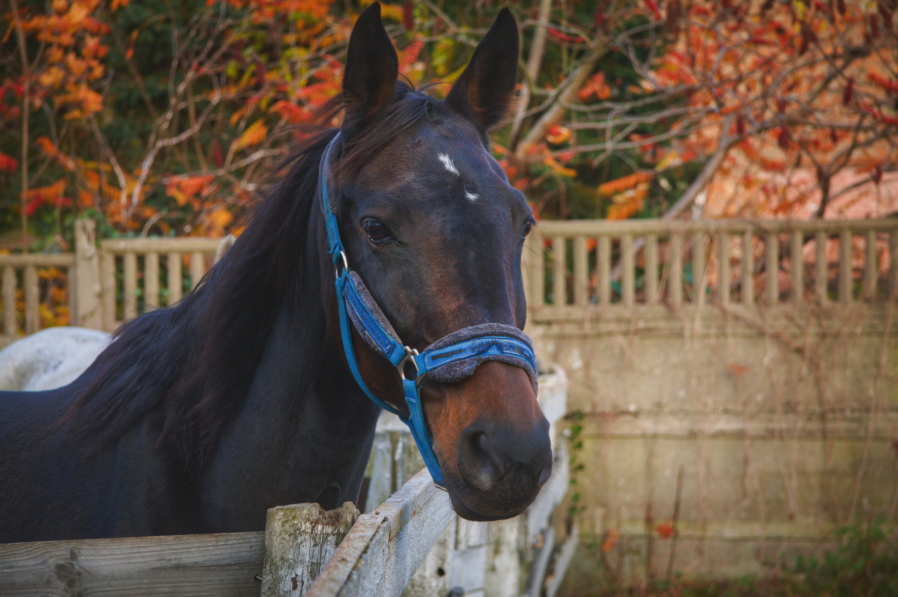

Activitats a Collbató
Descobreix les rutes, excursions i tradicions del nostre poble.
Senderisme per Montserrat
Rutes guiades i autoguiades amb paisatges espectaculars.
Excursions a cavall
Visites guiades per conèixer la natura a cavall.

Escalada i activitats d'aventura
Per als més aventurers: escalada, tirolina i més.

Gastronomia local
Productes de proximitat i plats típics del poble.